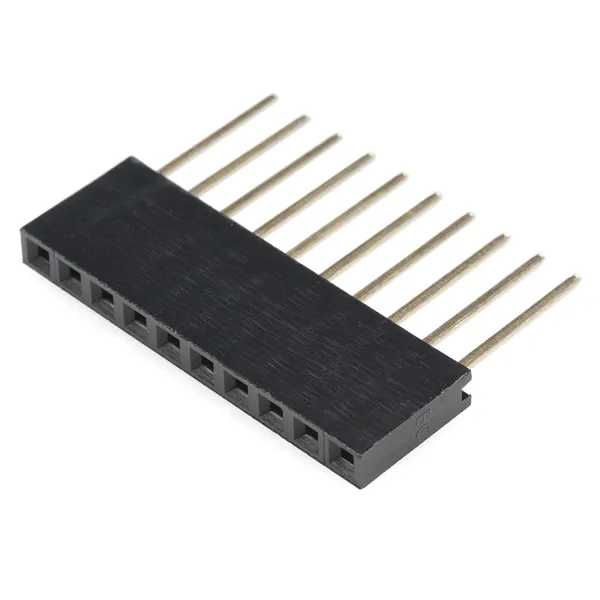
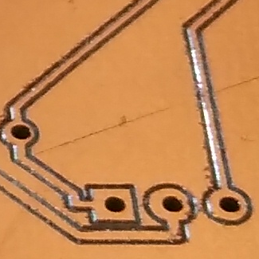
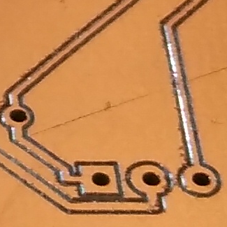

Process
The process of creating a PCB with a CNC mill includes the following steps:
- Design a circuit with the KiCad Schematics editor
- Design the board layout with the KiCad PCB editor
- Route the traces, possibly with an Autorouter (freerouting)
- Export the Gerber files from the PCB editor
- Generate the gcode for the isolation milling and the drill holes with pcb2gcode
- Autolevel the physical board with cnc.js
- Create the traces by isolation milling with cnc.js
- Drill the holes with cnc.js
Board Layout with PCB Editor
Isolation milling depends upon the possible precision that can be achieved with a given CNC machine, routing
bit, etc.
If the trace width and the clearance are selected too narrow, then the isolation milling process may not
succeed.
Values such as trace width and the clearance can be modified in the board setup dialog.
Here are the default values:

In my case, the following values work:
You can check the correct routing by running a design rules check:
Go to Inspect -> Design Rules Checker

Export Gerber files from PCB Editor
Go To File -> Fabrication Outputs -> Gerbers (.gbr)

Click on Generate Drill Files...

Converting gerber files to gcode
The easiest way to use pcb2gcode is to put a file named millproject into the same folder where the gerber
files are, and simply call
pcb2gcode
Contents of millproject file
Example of millproject file:
millproject
Example for content:
https://reprap.org/wiki/PCB_Milling#pcb2gcode
G81 command and GRBL
The G81 command is for a drill cycle where you state the Z-axis once and then only list the X and Y
movement
implying that for each X and Y line, a Z-axis lowering will happen.
GRBL controllers do not support this command, and the bit will just move around without lowering the
Z-axis.
For CNC controllers which do not support these so-called "canned cycles", you can disable the G81 option in
the millproject file:
# Drill options
nog81=true
Negative Coordinates
pcb2gcode will by default place the backside of a PCB on the negative side of the X-Y-plane.
If you prefer to have your board to have positive Coordinates, you can add the lines for the
offset option to the millproject file, for example :
x-offset=-65 mm
y-offset=5 mm
Drill Holes
The following applies to through-hole components.
Pre-Drilling
You may get better results in creating drill holes by putting a small indent
with the milling bit on the point where a drill will be used later:
|
Run pcb2gcode with the following parameter in the millproject file:
#predrill
zdrill=-0.05000
Run the gcode with the resulting drill gcode file.
Don't forget to apply the saved autolevel results to this gcode file before running it.
Drill Sizes
To reduce the number of tool changes, find the component with the largest
pin diameter and use a drill that is a bit larger,
For example
| Name |
Image |
measured size |
| blue trim pot |
|
0.45 mm |
| IC Socket |
|
0.56 mm |
| DIP switch |
|
0.58 mm |
| Arduino pin |
 |
0.60 mm |
To drill the holes, change the tool by removing the milling bit and inserting the drill bit.
Make sure to zero out the drill bit before starting the drilling.

 
